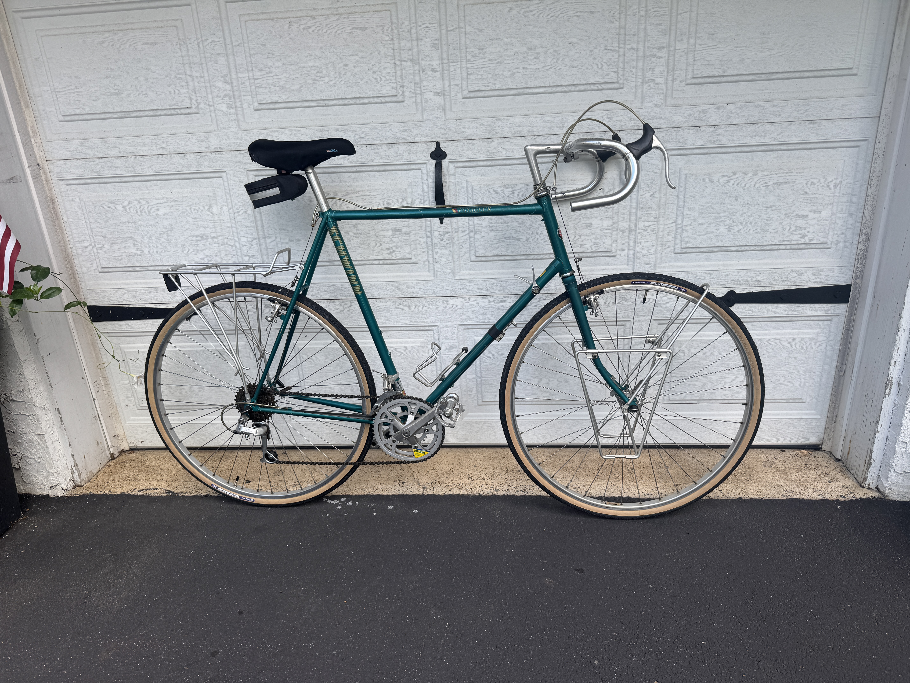
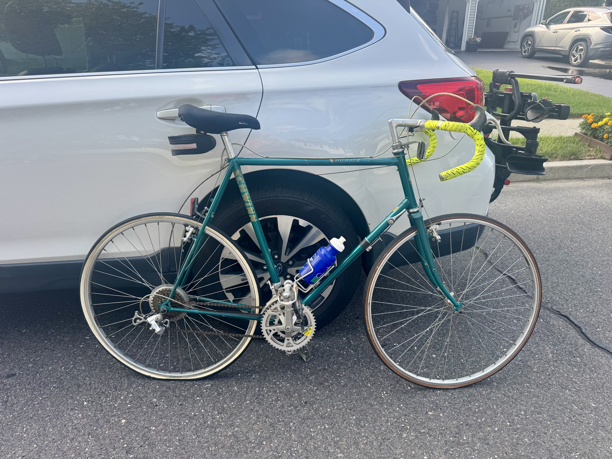
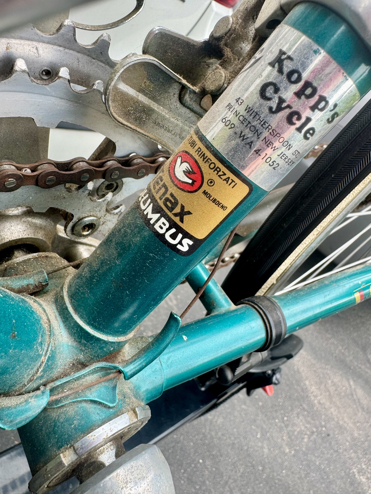
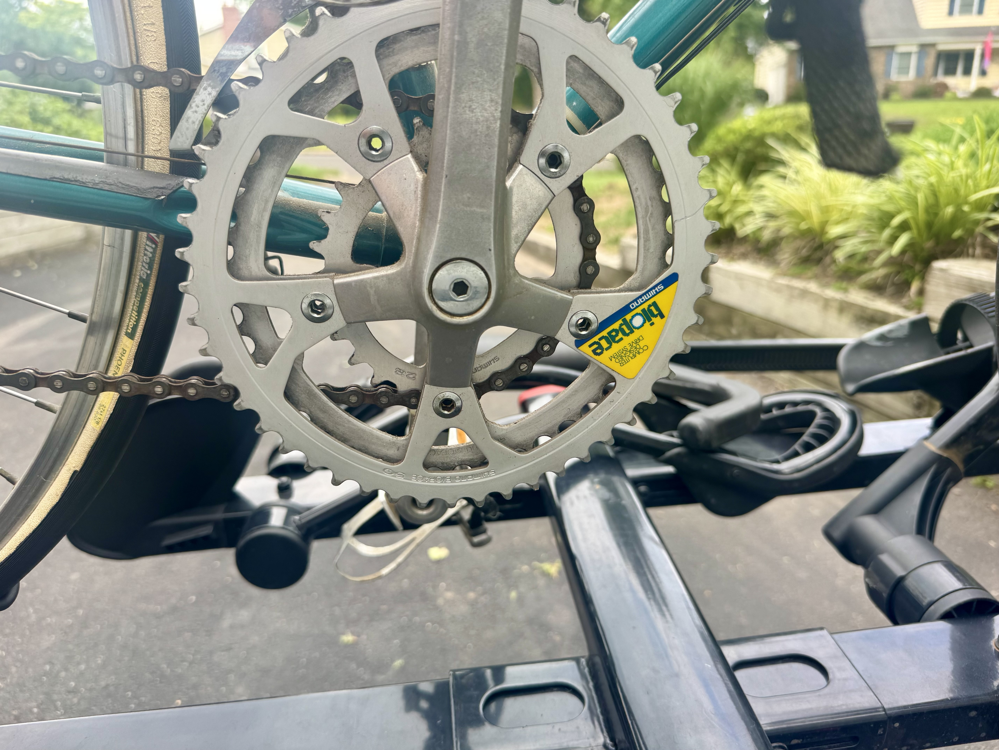
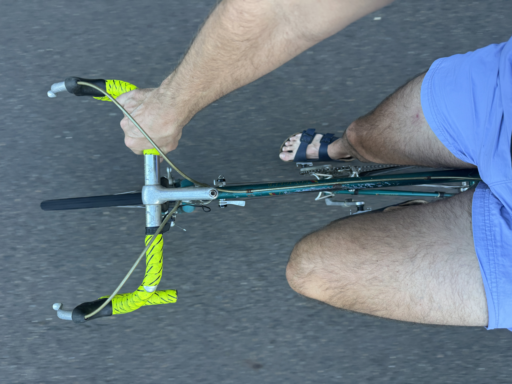
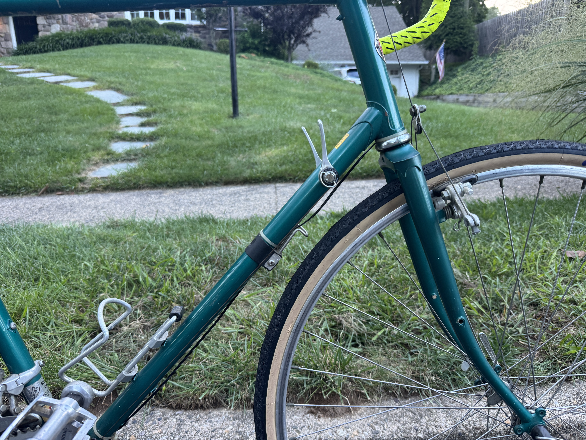
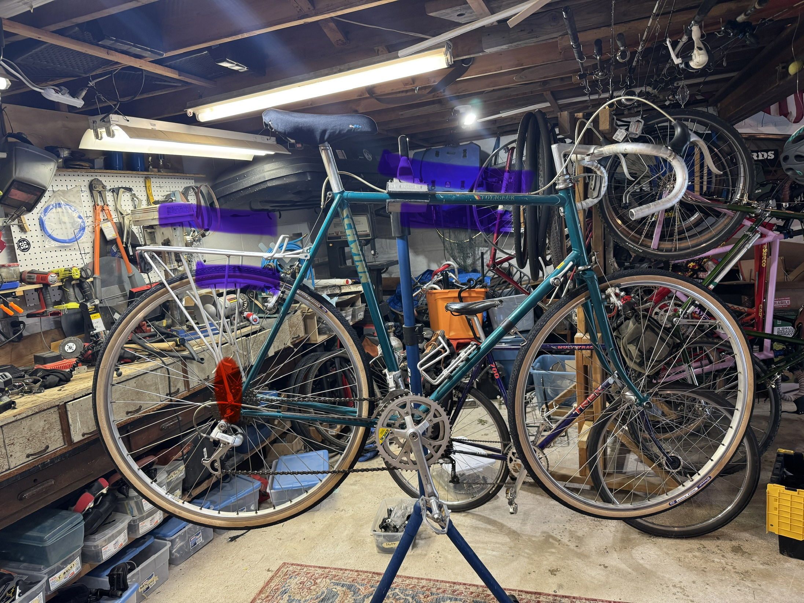

The $35 Voyager

I picked up this Schwinn Voyager for $35. It was a cool old touring bike, it was complete, and at that price it seemed worth bringing home just to see what I could do with it.
There were also a few things about the bike I wanted to try. One was the indexed downtube shifting.




What made the bike even more interesting was everything that came along with it. It still had the original sales receipt and brochure, plus an old photo the original owner had taken of the bike. For a $35 bike, it came with a surprising amount of its history intact.
My original idea was pretty simple: give it a quick once-over, leave it mostly as it was, and maybe make a century its first real ride with me.
I didn’t quite leave it alone.



At one point I experimented with changing the wheelset. I went back and forth on that, but eventually found some decent tires that fit the original wheels for cheap, so I decided to keep the original wheelset.
I did decide to change the contact points. I had another saddle and handlebars on hand that fit the touring bike pretty well and, more importantly, fit me better. I went back and forth on making those changes too, but based on experience I knew they’d probably be a net positive.
I also added a set of touring racks I already had sitting around.


So it didn’t end up being quite the mostly-as-is old Voyager I initially imagined. But it also didn’t turn into a complete rebuild. It’s still basically the old touring bike I bought for $35, with some changes that make it work better for me.